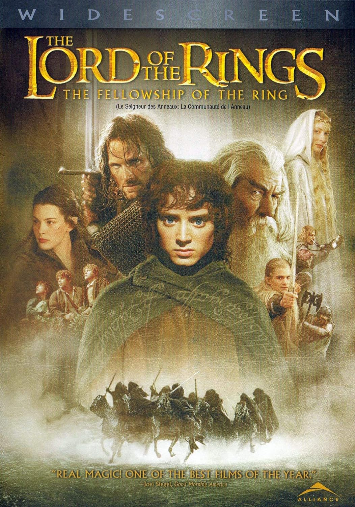
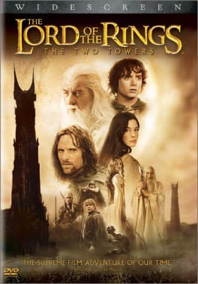
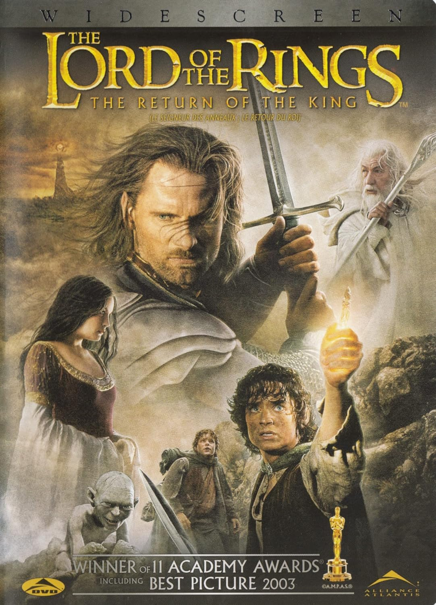

the fellowship of the Ring

the Two Towers

In the part second of the Tolkien trilogy, Frodo Baggins and the other members of the Fellowship continue on their sacred quest to destroy the One Ring--but on separate paths.
Return of the King

The final battle for Middle-earth begins. Frodo and Sam, led by Gollum, continue their dangerous mission toward the fires of Mount Doom in order to destroy the One Ring. Aragorn struggles to fulfill his legacy as he leads his outnumbered followers against the growing power of the Dark Lord Sauron, so that the Ring-bearer may complete his quest.